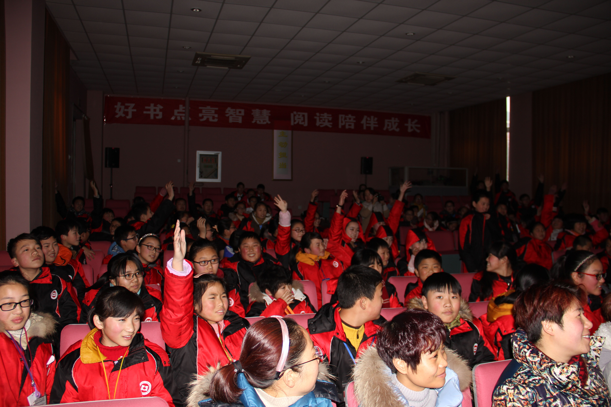

PRESS RELEASE
Immediate
Contact:
Adam Chang
Email | (973) 937-8555
LHS Student Brings Financial Literacy Halfway Around the World
JANUARY 11, 2016
A Livingston High School sophomore recently enjoyed winter break abroad, but did more than just travel. Eileen Deng, a member of the Teaching Investment and Money Management Initiative (TIMMI), also spent a day teaching financial literacy while on vacation in China.
On December 29th, 2015, Deng taught a financial literacy program in the Yancheng Toronto International School, a boarding school located 200 miles north of Shanghai in Jiangsu province, near where Deng's grandparents live. Her program, the result of extensive prior communication and planning, saw an audience of approximately 100 students dressed in the school's black and red uniforms.
"The students were excited to learn about financial literacy, as well as about America. They definitely hoped to practice the English they've been learning in school," commented Deng. Deng acknowledged that the language barrier presented some difficulty, in that "the students knew common English phrases, but needed translations for specific financial terms." She noted, however, that "the enthusiasm for learning and participating" didn't change from that found in New Jersey classrooms.
Topics covered included credit cards, loans, and the three C's of credit—character, capacity, and collateral. One activity demonstrated the convenience of credit cards by having students count out exact change, a display that perhaps was too effective after students became perplexed counting out currency from the United States.
Xiaoyun Sun, an English teacher at Yancheng Toronto International School, praised that "[TIMMI] was a great addition to our annual cultural festival" and also a "good opportunity for students to learn about what students in the United States are doing."
Jiang Yanfu, a seventh-grader at the school, added that he learned that "people have to learn very early on how to manage money," a skill that, he says, is not conventionally taught in Chinese schools.
The Teaching Investment and Money Management Initiative is a student-run financial literacy organization based at the Livingston High School in New Jersey, and has previously taught programs around North Jersey.
# # #
Photographs
Credit: Yancheng Toronto International School
Caption: Eileen Deng teaches a TIMMI program on credit at the Yancheng Toronto International School in Jiangsu, China.

Caption: Siqi Shan and Sundong You, students from the Yancheng Toronto International School, work with Eileen Deng to count out U.S. currency in a demonstration on the convenience of credit cards.
Caption: Students ask questions about financial literacy and life in the United States after a TIMMI program at the Yancheng Toronto International School.
Caption: Students from Yancheng Toronto International School, dressed in the school's red-and-black uniforms, pose with Livingston High School student and TIMMI member Eileen Deng.